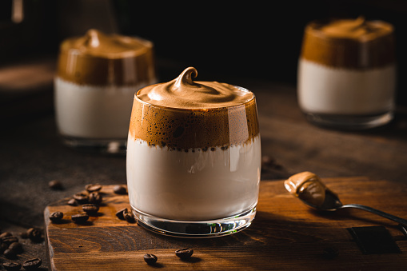
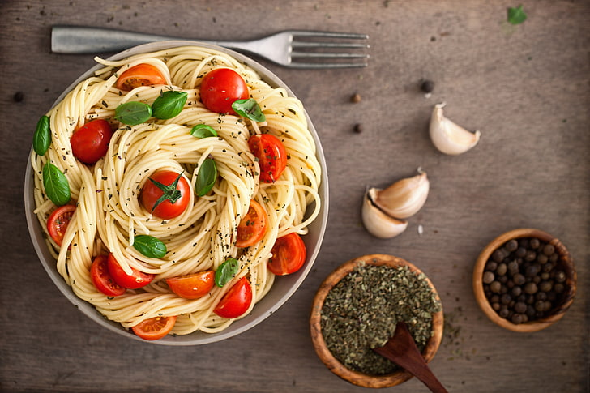
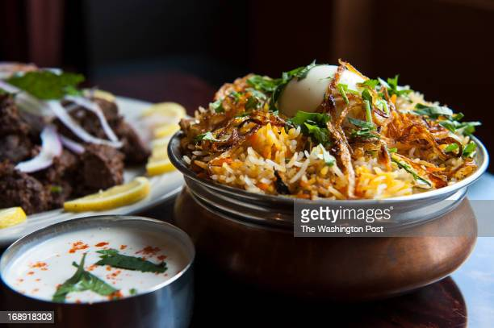
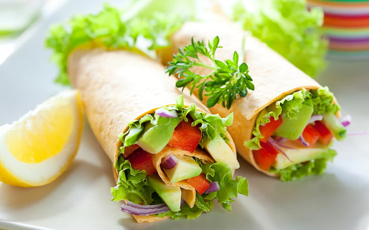
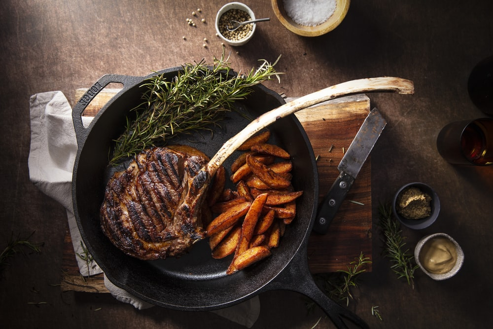
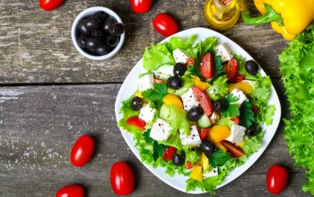

Mocha Coffe

Pasta

Briyani

Cookies

Wrap

Icec Cream

Noodles

Steak

Canada’s popular poutine consists of fries and cheese curds, topped with a thick brown gravy. It was first served in the 1950s in rural snack bars in Quebec but now can be found nearly everywhere. It has become a symbol of Québécois culture..
The fermented cabbage that is Korea’s trademark, kimchi has an ancient history on the North Pacific peninsula, where residents have long found ways to preserve vegetables through the frigid winters. Its flavors of sweet, sour, spicy, bitter, and salty reflect the Five Elements theory of Korean culture..
Mongolia’s steamed dumplings, called buuz, are filled with seasoned minced mutton or beef and cooked on a stove at the center of a yurt. Buuz is the traditional dish served during White Moon, the Mongolian lunar new year. For the celebration, families prepare thousands of buuz in advance and freeze them.